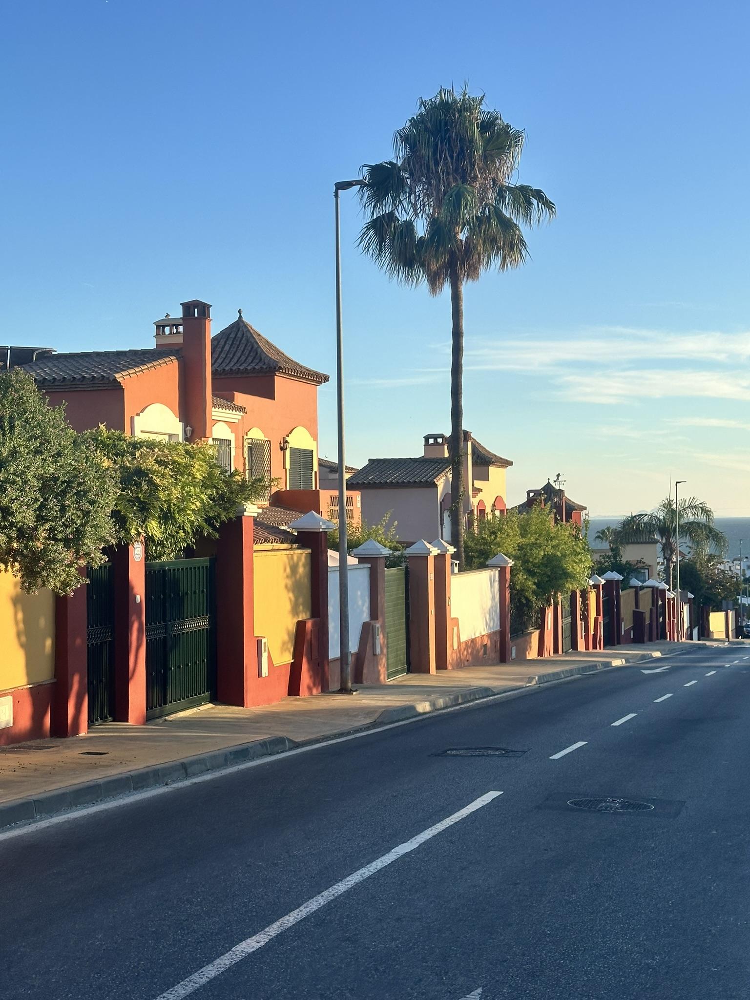
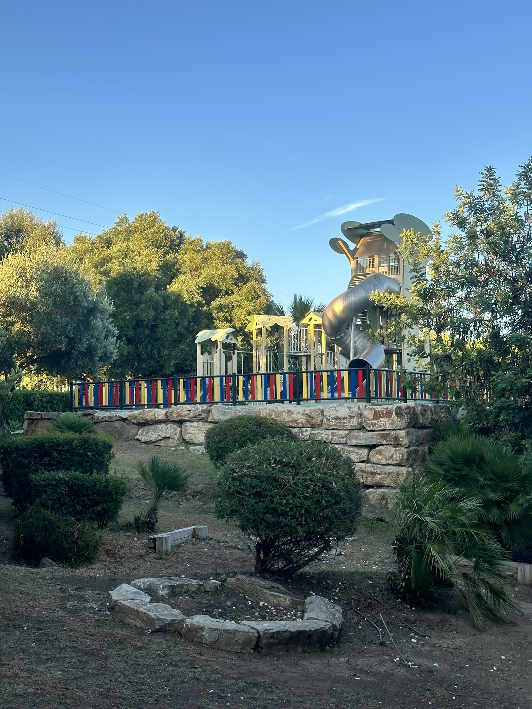
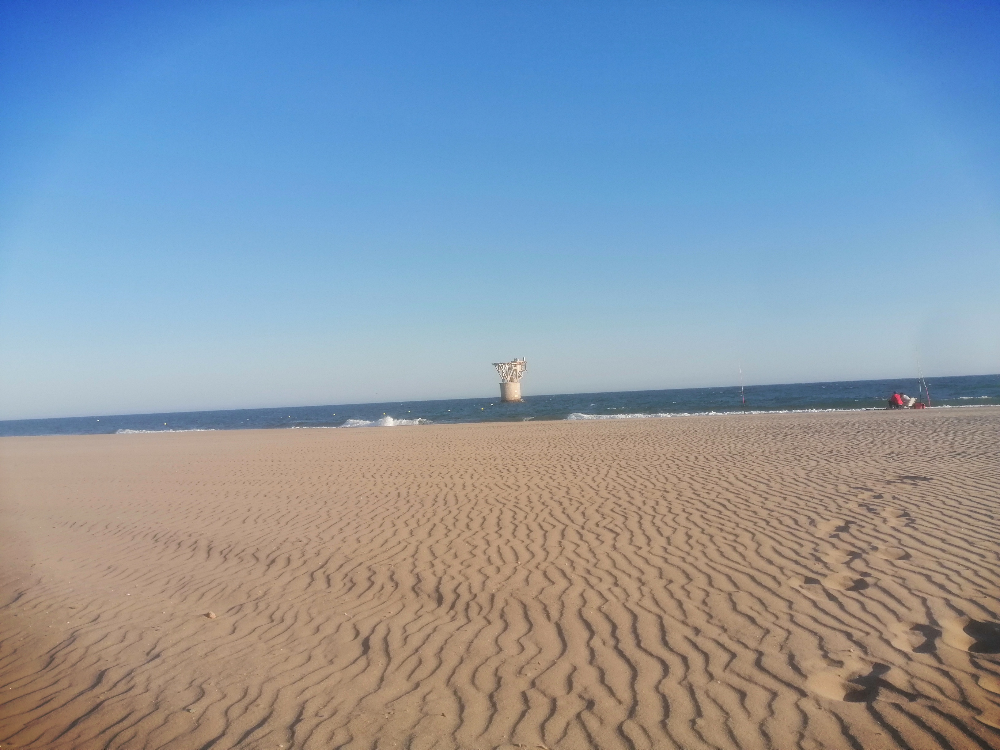
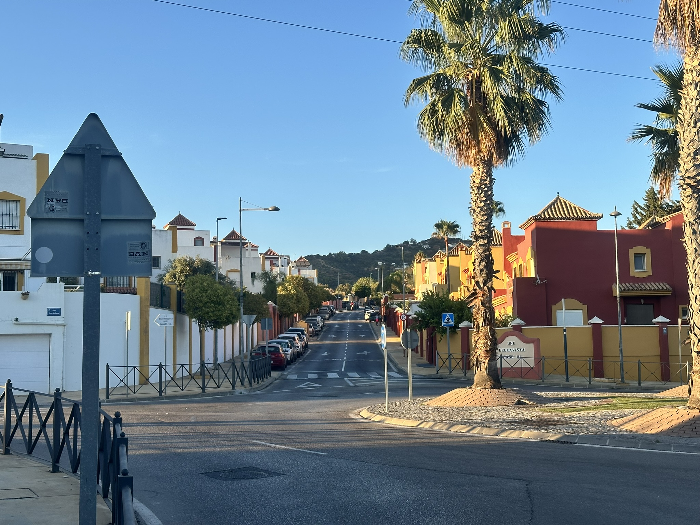
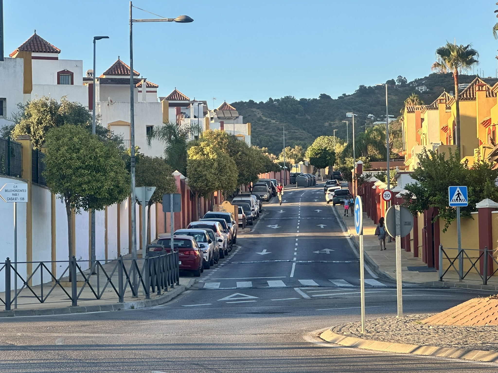
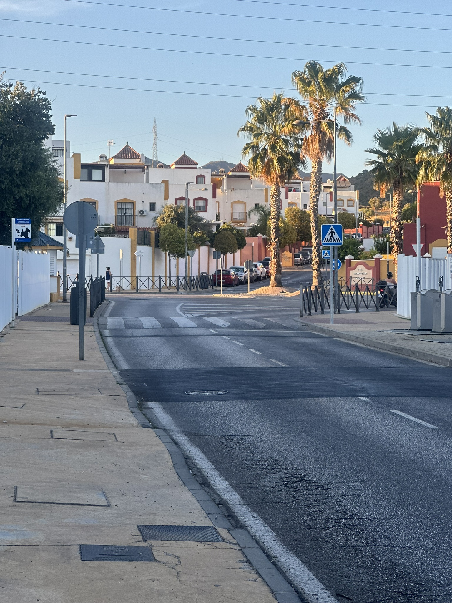
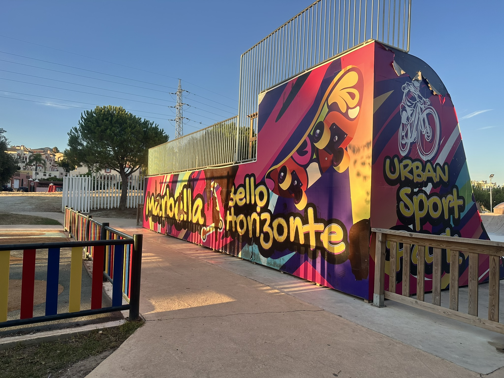
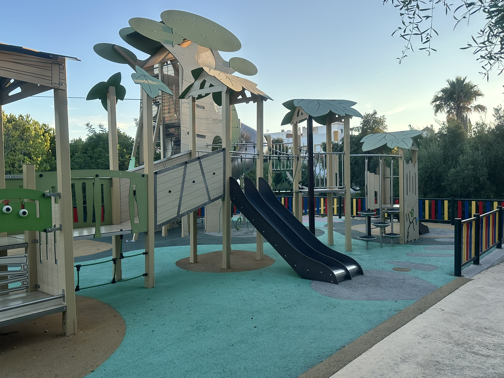
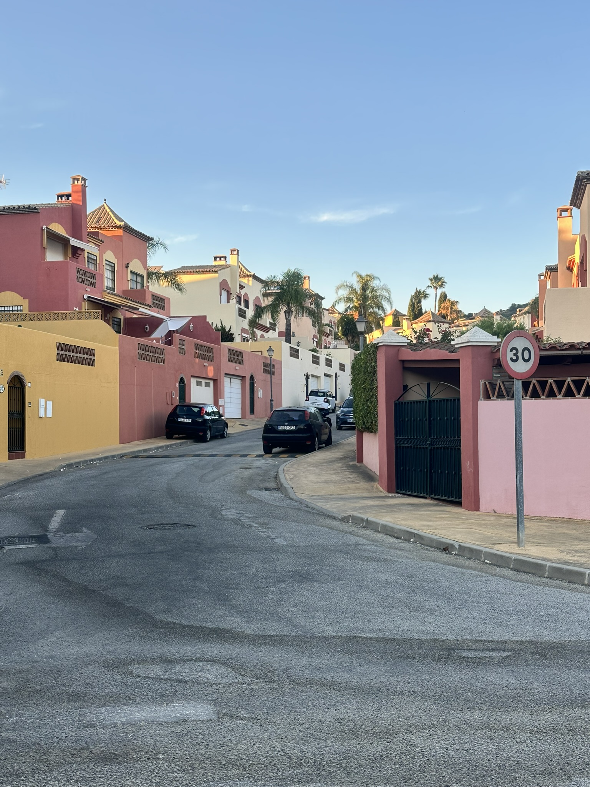

Area Guide · Marbella East
One of Marbella's most authentic neighbourhoods: genuinely residential, beach on foot, Marbella in minutes.
Bello Horizonte is one of Marbella's best-kept secrets, and the locals who live here tend to keep it that way. Set back from the iconic Marbella Arch on the eastern outskirts of town, this is a genuinely Spanish, genuinely residential neighbourhood where families put down roots, neighbours know each other, and the Marbella lifestyle is lived without the crowds, the noise or the tourist prices. Spacious townhouses, easy beach access, excellent schools, good public transport and a recreation park on the doorstep, all within walking distance of the sea and minutes from Marbella centre.
Bello Horizonte sits on the eastern edge of Marbella, set back from the iconic Marbella Arch and leading up into the hills towards Lomas de Pozuelo and Rio Real.
It is the kind of location that gives you the best of both worlds: on the outskirts of Marbella, away from the centre, yet with the beach, the shops and the town all within easy reach.

Bello Horizonte is made up of several streets of three and four storey townhouses, predominantly white and yellow, climbing from the Marbella Arch up towards Lomas de Pozuelo. The urbanisation is divided into phases, and as you reach the higher levels the properties become more detached, with generous terraces and, in some cases, private pools.
It is a traditional, established area. Many of the residents are Marbella families who have lived here for years, and that sense of community gives the neighbourhood a warmth and authenticity that is increasingly rare this close to the coast.
"The kind of neighbourhood where people know their neighbours and children play in the street. Increasingly rare this close to the coast."
Leading off from Bello Horizonte you find the residential urbanisations of Lindasol, Real Panorama and Hacienda Cortes: traditional Andalusian villas with mature gardens, many with pools and sea views, and others offering genuine potential for renovation or rental investment.

Despite its position in the hills, Bello Horizonte is within easy walking distance of the sea. The closest beach is Playa El Cable, where sunbeds and beach restaurants make for an easy, relaxed day by the water.
The beach restaurants here include Dolce Vita, Sacay and Playa Padre, where some of the world's most renowned DJs play during the summer months.
From Playa El Cable you can also join the Senda Litoral, the wooden coastal boardwalk that stretches along the Mediterranean towards Marbella and Rio Real, one of the finest coastal walks on the Costa del Sol.
"From Playa El Cable, the Senda Litoral takes you all the way to Marbella along the Mediterranean. One of the finest coastal walks on the Costa del Sol."







Bello Horizonte has its own recreation park, well used by local families and one of the reasons the area works so well for people with children.
For longer walks, the routes up through Lomas de Pozuelo into the hills behind Rio Real and Los Monteros start directly above the urbanisation, rewarding climbs with extraordinary views at the top.
The Senda Litoral coastal boardwalk, accessible from Playa El Cable below, connects the area all the way along the Mediterranean towards Marbella.
Bello Horizonte is well placed for families with children at all stages of education. Public schools in Marbella are easily accessible, while a strong range of private and international options are all within a short drive.
Public schools in Marbella are often better than incoming residents expect. Several are well-regarded locally and serve the community well. We're always happy to share our first-hand knowledge of the local options.
Bello Horizonte is well served by public transport. The number 6B bus connects residents to La Cañada Shopping Centre, while the number 6 route runs through Bello Horizonte between Cabopino and La Cañada.
Marbella residents also receive a free bus pass upon registration, making day-to-day travel genuinely affordable.
For drivers, Marbella centre and La Cañada are both within five minutes without touching the highway, a practical detail that makes everyday life noticeably easier.
Lomas de Pozuelo and Rio Real sit directly above, meaning the wider community of Marbella East is on your doorstep.
The people who find Bello Horizonte tend to stay. It offers something that is genuinely difficult to find at this price point and this close to Marbella.
Spacious three and four bedroom townhouses, a recreation park on the doorstep, excellent schools nearby and safe, established streets. One of the most practical family neighbourhoods on the Costa del Sol.
This is not a tourist area. It is where Marbella people live, and that makes it feel completely different from the more commercial parts of the coast.
Compared with more prominent addresses nearby, Bello Horizonte and the neighbouring urbanisations of Lindasol, Real Panorama and Hacienda Cortes offer genuine value: space, a garden and a pool within reach of the beach.
Several properties in Lindasol, Real Panorama and Hacienda Cortes offer excellent potential for buyers looking to renovate or develop a holiday rental in a location with strong seasonal demand.
Peaceful streets, good bus connections, beach within walking distance and Marbella on the doorstep without any of the noise. A combination that suits a relaxed pace of life very well.
Why We Love Bello Horizonte
Bello Horizonte has not been discovered by the crowds. It has not been taken over by holiday lets and tourist restaurants. It is still a neighbourhood in the truest sense, where people know their neighbours and children play in the street.
The beach is walkable. The town is minutes away. The views from the upper phases of the urbanisation, and from Lindasol, Real Panorama and Hacienda Cortes above, are quietly spectacular.
It is the Marbella that people who have lived here for decades know and love. And it is increasingly rare.
Our current listings in Bello Horizonte and the neighbouring urbanisations of Lindasol, Real Panorama and Hacienda Cortes.
Everything buyers want to know about Bello Horizonte.
Bello Horizonte is a traditional residential neighbourhood on the eastern outskirts of Marbella, made up primarily of three and four storey townhouses set across several streets between the Marbella Arch and the urbanisations of Lomas de Pozuelo and Rio Real above.
It sits on the eastern edge of Marbella, directly behind the iconic Marbella Arch. Marbella centre is around five minutes by car, and the beach at Playa El Cable is within walking distance.
Yes. It is one of the most family-friendly neighbourhoods in Marbella. The recreation park with basketball court, skate park, children's playground and dog park is within the neighbourhood, schools are well within reach, and the streets are safe and established.
Yes. Playa El Cable is within easy walking distance, with beach restaurants and sunbeds throughout the summer. From there you can also join the Senda Litoral coastal boardwalk towards Marbella and Rio Real.
The majority are three and four bedroom townhouses, predominantly white and yellow in the traditional Marbella style. The upper phases include more detached properties with terraces and pools. The neighbouring urbanisations of Lindasol, Real Panorama and Hacienda Cortes offer traditional Andalusian villas with mature gardens, many with pools and sea views.
Yes. The 6B bus serves La Cañada Shopping Centre and the 6 runs between Cabopino and La Cañada, stopping in Bello Horizonte. Marbella residents receive a free bus pass on registration.
Yes, particularly for buyers looking at the renovation and rental market. Properties in Lindasol, Real Panorama and Hacienda Cortes offer strong potential, and the location, within walking distance of the beach and minutes from Marbella, supports good seasonal rental demand.
Because it is part of the community we know and love. The route between Bello Horizonte, Lomas de Pozuelo and Rio Real is one we travel every day, and we understand the distinct character of each neighbourhood and what makes each one right for different buyers.
Talk to a Local
We know this neighbourhood well. Let us help you find the right home, whether it's a family townhouse, a villa with a view or a renovation project with potential.